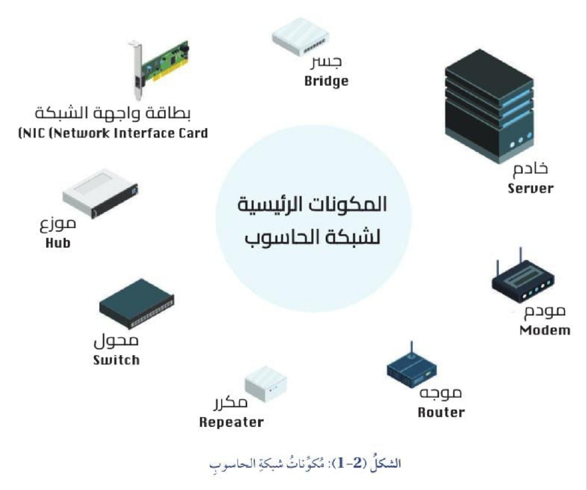
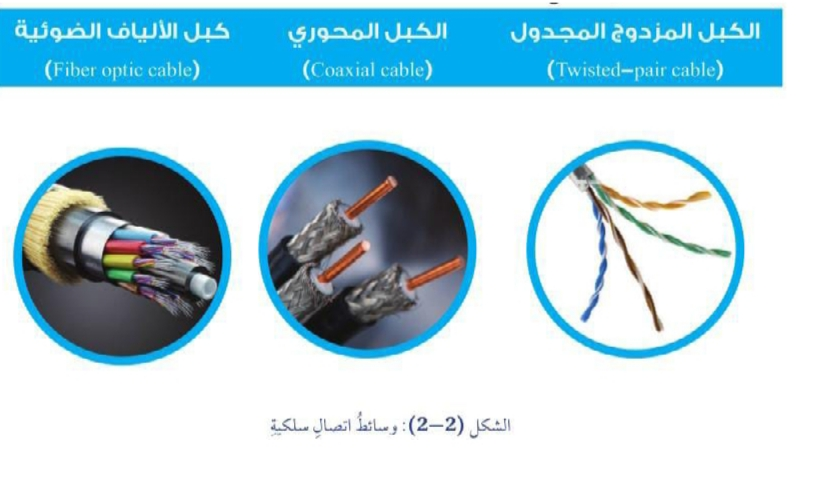
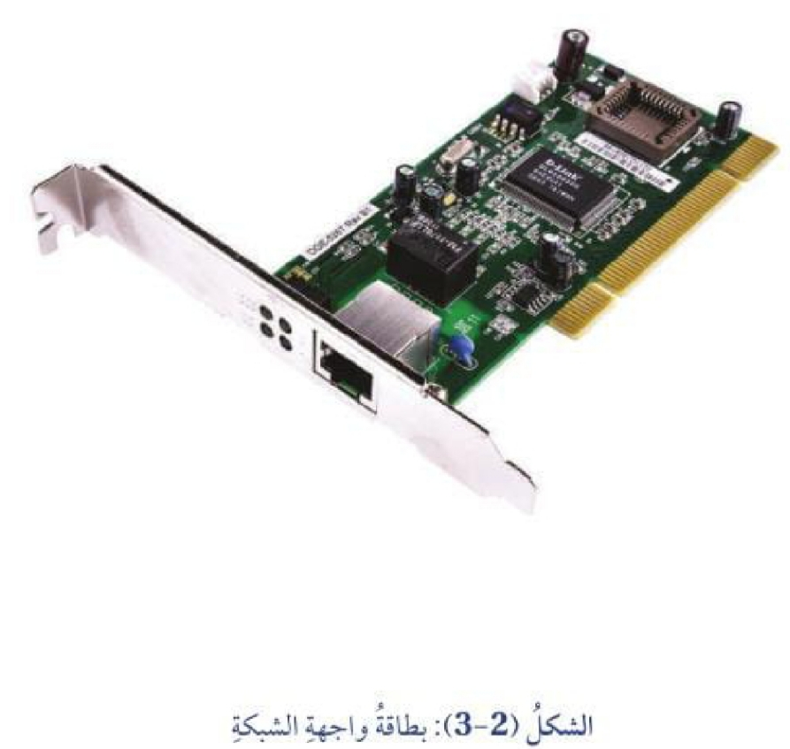
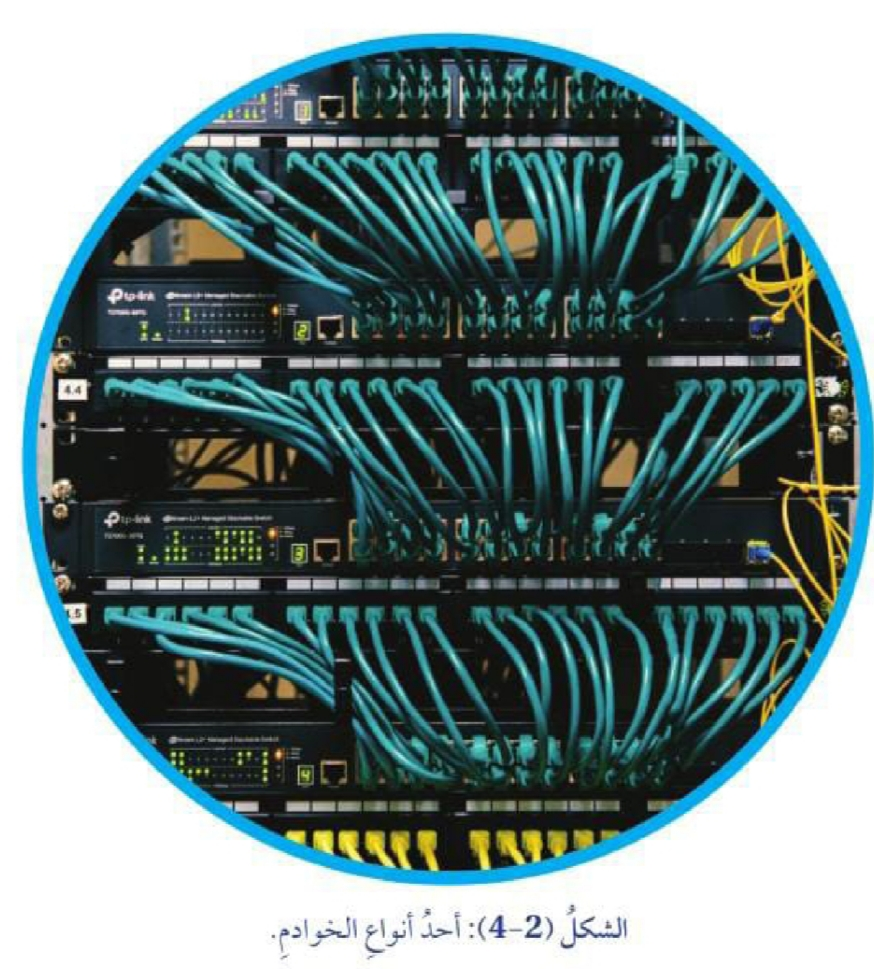
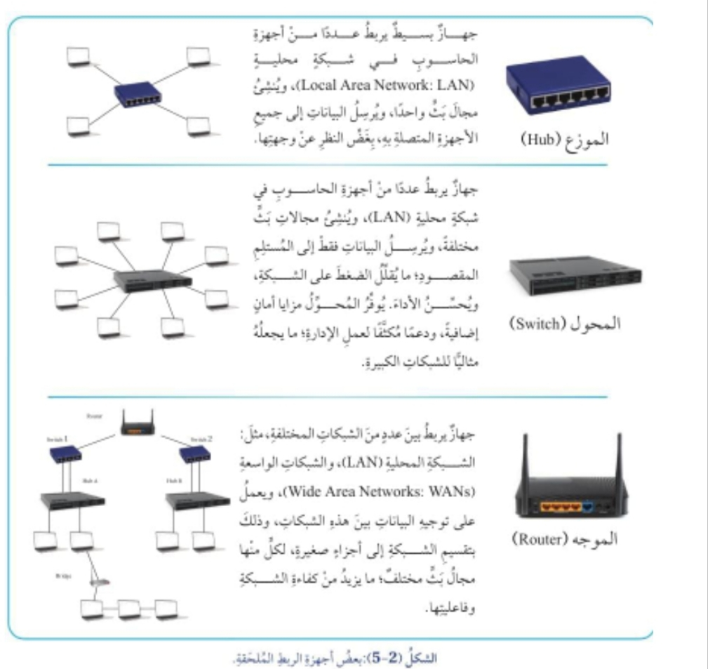
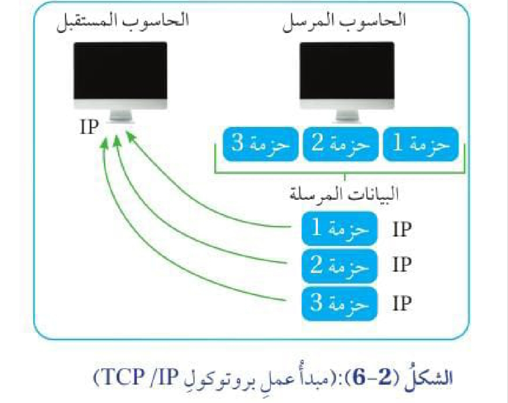
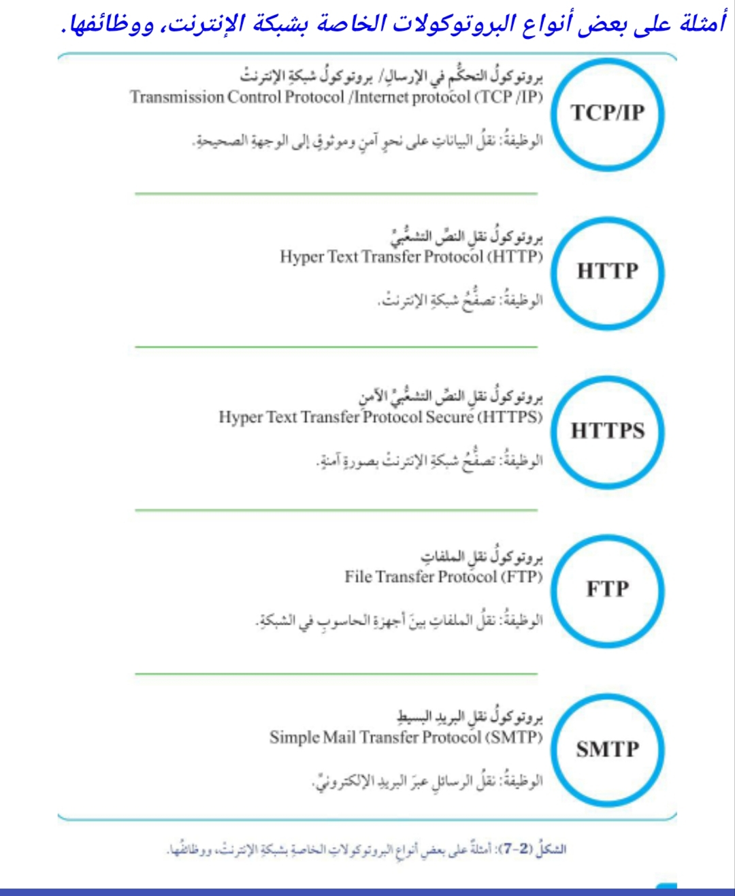

مكونات شبكات الحاسوب
علل: شبكات الحاسوب ضرورية للتواصل وتبادل المعلومات.
إذ يمكن بها مشاركة البيانات والموارد والخدمات بين أجهزة المستخدمين.
إن الأداء الصحيح والفاعل للشبكة يتطلب مكونات مختلفة:
- منها ما هو في صورة أجهزة مادية (Hardware).
- ومنها ما هو في صورة برامج (Software).
على ماذا يعتمد نوع المكونات المطلوبة لتثبيت الشبكة؟
على نوع الشبكة، والهدف منها، ولكن توجد بعض المكونات التي لا يمكن
الاستغناء عنها بغض النظر عن نوع الشبكة وهدفها.
تتألف شبكة الحاسوب من المكونات الآتية:

- أجهزة الحاسوب.
- خطوط الاتصال.
- بطاقة واجهة الشبكة (NIC - Network Interface Card).
- الخادم (Server).
- أجهزة الربط الملحقة (Nodes).
- بروتوكولات الشبكة (Protocol).
يتطلب إنشاء شبكة حاسوب توافر جهازي حاسوب على الأقل.
أولًا: خطوط الاتصال
وضح المقصود بخطوط الاتصال.
وسائط لنقل إشارات البيانات بين أجهزة الشبكة.
تصنف خطوط الاتصال إلى نوعين:
- وسائط الاتصال السلكية (Wired).
- وسائط الاتصال اللاسلكية (Wireless).
وضح المقصود بوسائط الاتصال السلكية.
وسيلة مادية (كابلات) تنقل إشارات البيانات بين الأجهزة المرتبطة بالشبكة.
أنواع كابلات الشبكة:
- الكبل المحوري (Coaxial Cable).
- الكبل المزدوج المجدول (Twisted Pair Cable).
- كبل الألياف الضوئية (Fiber Optic Cable).

وضح المقصود بوسائط الاتصال اللاسلكية.
وسيلة لنقل البيانات في شبكة الحاسوب من دون الحاجة إلى وجود أسلاك (كابلات).
أعط أمثلة على وسائط الاتصال اللاسلكية.
- موجات الراديو (Radio Waves).
- الموجات القصيرة جدًا (Microwaves).
- الأشعة تحت الحمراء (Infrared).
ثانيًا: بطاقة واجهة الشبكة
وضح المقصود ببطاقة واجهة الشبكة
(Network Interface Card - NIC).
مكوّن مادي يُستعمل لربط جهاز حاسوب بإحدى الشبكات، وهو مسؤول عن
نقل البيانات من جهاز الحاسوب المرسل واستقبال البيانات في جهاز
الحاسوب المستقبل.
وظيفة بطاقة واجهة الشبكة:
- ربط جهاز حاسوب بإحدى الشبكات.
-
نقل البيانات من جهاز الحاسوب المرسل واستقبال البيانات في جهاز
الحاسوب المستقبل.
-
تحتوي بطاقة الشبكة على واجهة تتيح للأجهزة الاتصال فيما بينها
عن طريق خطوط الاتصال المتوافرة؛ سواء كانت هذه الخطوط سلكية
أو لاسلكية.
-
تُعد هذه البطاقة مكونًا أساسيًا في أجهزة الحاسوب التي تتطلب
الاتصال بالشبكة؛ إذ تسمح بتبادل البيانات والاتصالات بين الأجهزة
المختلفة التي ترتبط بالشبكة.

إضاءة: الاتصال بالإنترنت عن طريق الأقمار الصناعية
يمكن الاتصال بشبكة الإنترنت عن طريق الأقمار الصناعية
(Satellite Internet).
ويُعد هذا النوع من الاتصال أكثر فاعلية في المناطق المعزولة والمناطق
النائية، مثل: البحار البعيدة، والجزر المعزولة، والطائرات.
ويشيع استخدام الاتصال بالأقمار الصناعية في أعقاب وقوع كارثة طبيعية،
وفي المناطق التي تشهد نزاعات ومعارك وصراعات؛ إذ يُعد ذلك حلًا ناجعًا
لتوفير اتصال سريع وموثوق به في ظل غياب البنية التحتية التقليدية.
ثالثًا: الخادم (Server)
وضح المقصود بالخادم.
جهاز حاسوب مركزي يستخدم نظام برمجة خاصًا يوفر مجموعة من الخدمات
لأجهزة الحاسوب الأخرى المرتبطة بالشبكة (العملاء، أو المستخدمون).

مميزات الخوادم:
- سرعة عالية.
- سعة تخزين كبيرة مقارنة بأجهزة الحاسوب المكتبية العادية.
-
مصممة للعمل بصورة مستمرة، ومن دون توقف؛ للوفاء بحاجات المستخدمين المتعددة.
وظائف الخوادم:
- تحديد صلاحيات المستخدمين.
- تخزين البيانات وإدارتها.
-
الاحتفاظ بجميع المعلومات والموارد المهمة التي يمكن للأجهزة الأخرى
الوصول إليها.
علل: الخوادم مصممة للعمل بصورة مستمرة، ومن دون توقف.
للوفاء بحاجات المستخدمين المتعددة.
رابعًا: أجهزة الربط الملحقة (Nodes)
وضح المقصود بأجهزة الربط الملحقة.
أجهزة تُستعمل للربط بين أجهزة الحاسوب في الشبكة، أو ربط شبكتين
مختلفتين معًا، وهي تساعد على توجيه البيانات بين أجهزة الشبكة.
من أجهزة الربط الملحقة:
- الموزع (Hub).
- المحول (Switch).
- الموجه (Router).

الموزع (Hub)
وضح المقصود بالموزع.
جهاز بسيط يربط عددًا من أجهزة الحاسوب في شبكة محلية
(Local Area Network: LAN)، وينشئ مجال بث واحدًا،
ويرسل البيانات إلى جميع الأجهزة المتصلة به بغض النظر عن وجهتها.
آلية عمل الموزع (Hub):
ينشئ مجال بث واحدًا، ويرسل البيانات إلى جميع الأجهزة المتصلة به
بغض النظر عن وجهتها.
المحول (Switch)
وضح المقصود بالمحول.
جهاز يربط عددًا من أجهزة الحاسوب في شبكة محلية (LAN)، وينشئ
مجالات بث مختلفة، ويرسل البيانات فقط إلى المستلم المقصود؛ ما يقلل
الضغط على الشبكة ويحسن الأداء.
وظائف المحول ومميزاته:
- يربط عددًا من أجهزة الحاسوب في شبكة محلية (LAN).
- ينشئ مجالات بث مختلفة.
- يرسل البيانات فقط إلى المستلم المقصود.
- يقلل الضغط على الشبكة ويحسن الأداء.
-
يوفر مزايا أمان إضافية، ودعمًا مكثفًا لعمل الإدارة؛ ما يجعله
مثاليًا للشبكات الكبيرة.
آلية عمل المحول (Switch):
يرسل البيانات فقط إلى المستلم المقصود؛ ما يقلل الضغط على الشبكة
ويحسن الأداء.
الموجه (Router)
وضح المقصود بالموجه.
جهاز يربط بين عدد من الشبكات المختلفة، مثل الشبكة المحلية (LAN)
والشبكات الواسعة (Wide Area Networks: WANs).
وظيفة الموجه وآلية عمله:
يعمل على توجيه البيانات بين هذه الشبكات، وذلك بتقسيم الشبكة إلى
أجزاء صغيرة، لكل منها مجال بث مختلف؛ ما يزيد من كفاءة الشبكة وفاعليتها.
خامسًا: بروتوكولات الشبكة (Protocol)
وضح المقصود ببروتوكولات الشبكة.
مكونات برمجية لشبكة الحاسوب، تتألف من مجموعة قواعد ومعايير تنظم
كيفية نقل البيانات عن طريق الشبكة، وتعمل على توفير اتصال صحيح وآمن
بين جميع الأجهزة المرتبطة بالشبكة.
تشبه بروتوكولات شبكة الإنترنت قواعد المرور التي نلتزم بها عند قيادة
المركبات؛ لضمان التحرك بصورة صحيحة، والوصول إلى وجهاتنا بأمان.
وضح المقصود ببروتوكولات شبكة الإنترنت.
مجموعة من القواعد التي تضمن وصول البيانات خلال الأجهزة إلى وجهتها
المطلوبة على نحو صحيح وآمن.
أعط أمثلة على البروتوكولات المتبعة في نقل البيانات عبر شبكة الحاسوب.
- بروتوكولات خاصة بنقل الملفات.
- بروتوكولات خاصة بنقل رسائل البريد الإلكتروني.
- بروتوكولات خاصة بعرض صفحات الإنترنت.
- العديد من البروتوكولات الأخرى.
يُعد بروتوكول التحكم في الإرسال / بروتوكول الإنترنت (TCP/IP)
واحدًا من أكثر بروتوكولات الشبكة شيوعًا وأهمية.
بروتوكولا TCP وIP
آلية عمل بروتوكول التحكم في الإرسال (TCP):
عند إرسال البيانات عبر شبكة الإنترنت، يعمل بروتوكول (TCP) في الجهاز
المرسل على تقسيم البيانات إلى أجزاء صغيرة تسمى الحزم، بغية نقل
البيانات بصورة أسرع، ثم يعمل بروتوكول (TCP) في الجهاز المستقبل على
إعادة تجميع البيانات وفق ترتيبها الصحيح بعد عملية التقسيم، والتحقق
من عدم ضياع حزم أثناء عملية الإرسال.

فائدة بروتوكول (TCP):
نقل البيانات بصورة أسرع، والتحقق من عدم ضياع أي حزم أثناء عملية الإرسال.
وظيفة بروتوكول الإنترنت (IP):
يعمل على توجيه البيانات إلى العنوان الصحيح للجهاز المستقبل؛ إذ يرفق
بكل حزمة بيانات عنوان (IP) للجهاز المستقبل؛ بغية توجيه الحزمة إلى
الجهاز المستقبل الصحيح.
فائدة بروتوكول الإنترنت (IP):
توجيه البيانات إلى العنوان الصحيح للجهاز المستقبل.
